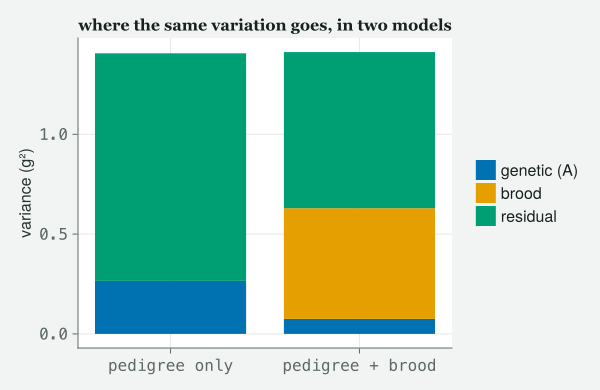
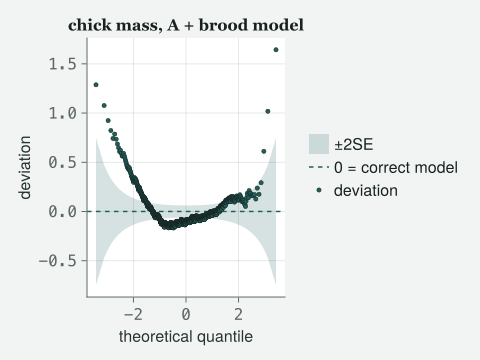
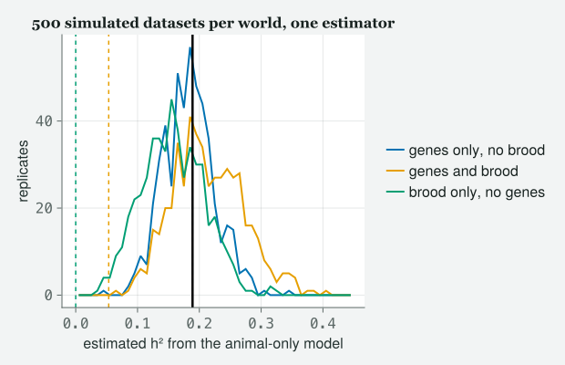

A one-generation pedigree, a matrix of ones and halves and quarters, and a heritability that lost most of itself the moment somebody put the nest the chick grew up in into the model.
Draft
Every number and figure on this page was produced when the site was built.
Engines DRM.jl 0.7.1 at 26f4c4ddc (Julia 1.10.0) · drmTMB 0.7.0 (R 4.6.0) Provenance Every Julia cell in this chapter was run when the site was built and its output printed. Caveat The data are real: 1950 Lundy Island house-sparrow chick records with their sire and dam, of which the 1675 that carry a mass are used here, read from data/2012/SparrowSurvival.csv (provenance in data/2012/README.md). The simulated quantities are drawn from models fitted to that file, from stated seeds, in cells you can read.
What this chapter is not. It is not a course in quantitative genetics, and it is not the chapter on phylogenetic comparative methods or meta-analysis, which belong together in another book. This is the last rung of version 1’s climb, and it frees one thing: the assumption that random effects are independent of each other.
Objectives
By the end of this class you should be able to:
Say what a relatedness matrix is, fill it in for a one-generation pedigree, and check a few of its entries by hand.
Fit an animal model with animal(1 | id) and a supplied A, and read the additive genetic variance off the fit.
Compute a narrow-sense heritability as a ratio of variance components, with an interval, and say what the denominator contains.
Name the thing full sibs share that is not genes, fit it, and report what happens to h².
Decide, by simulation rather than by hope, whether your design can tell those two apart at all.
Recognise that a pedigree, a phylogeny and a map of sites are the same model with a different matrix in it.
The class
Itchy’s office, 9:00 am. It is the last hard week, so JARO is here, with
coffee and a printed pedigree. TOTO has brought a laptop and a
hypothesis. MOMO has brought the data file. EDDIE has read ahead, and
today it will cost him.
Itchy
Class 6 said rows are not strangers, and gave every bird its own nudge.
Class 7 let the nudges have slopes. Class 9 let them live inside a coin
flip. Every one of those chapters made the same quiet promise, and today
we break it. Momo, you have the file open. Read me the promise.
Momo
u_j ~ N(0, σ_u²), independently for each j.
Itchy
Independently for each j. Every group drawn fresh, knowing
nothing about any other group. That is a lie about sparrows, about
species and about places, and today we replace it with a matrix.
usingRandom# tools/figures.jl includes tools/theme_itchy.jl itself, so one include does both.include("../tools/figures.jl")usingDRM, DataFrames, CSV, Statistics, LinearAlgebra, Printf, CairoMakieimportDistributions# qualified: DRM exports its own Poisson, Binomial, …set_theme!(theme_itchy(:light))raw = CSV.read("../data/2012/SparrowSurvival.csv", DataFrame; missingstring = ["NA", ""])println("rows, columns: ", size(raw))println(describe(raw, :nmissing, :eltype))first(raw, 6)
There is, and that is the whole chapter. Every one of these chicks has a
named sire and a named dam, so the file does not merely tell you which
chicks are in a group; it tells you how much any two of
them are related. Drop the rows with no mass and count what is left.
chicks with a mass : 1675 (of 1950 rows)
sires 126, dams 127, sire-dam pairs 208, broods 503
cohorts : 2003, 2004, 2005, 2006
1×5 DataFrame
Row
variable
mean
std
min
max
Symbol
Float64
Float64
Float64
Float64
1
Mass2
3.62191
1.191
1.2
9.6
Itchy
1675 chicks, 126 fathers, 127 mothers. Nobody is missing a parent, which
is rarer than it sounds and is why we are using this file. Toto, what is
the response?
Toto
Mass2. Chick mass, in grams, at the standard early
weighing.
Itchy
Chick mass, and the question is the oldest question in the room:
how much of the difference between one chick and another is
inherited? Not “is there a difference” — how much. Count the
sibships first, because the answer lives entirely in them.
fam =combine(groupby(chicks, [:Dad, :Mum]), nrow =>:k)sort!(fam, :k, rev =true)@printf("full-sib families (a sire-dam pair): %d\n", nrow(fam))@printf(" largest %d chicks, median %d, %d singletons\n",maximum(fam.k), round(Int, median(fam.k)), count(==(1), fam.k))sire_mates =combine(groupby(chicks, :Dad), :Mum => (m ->length(unique(m))) =>:n)dam_mates =combine(groupby(chicks, :Mum), :Dad => (d ->length(unique(d))) =>:n)@printf("sires with more than one mate: %d of %d\n", count(>(1), sire_mates.n), nrow(sire_mates))@printf("dams with more than one mate: %d of %d\n", count(>(1), dam_mates.n), nrow(dam_mates))
full-sib families (a sire-dam pair): 208
largest 48 chicks, median 5, 12 singletons
sires with more than one mate: 59 of 126
dams with more than one mate: 55 of 127
Eddie
So there are half sibs as well as full sibs.
Itchy
There are, and that matters more than the counts suggest. A design with
nothing but full-sib families gives you one number — how alike siblings
are — and asks you to believe that all of it is genetic. Half sibs give
you a second number at a different relatedness, and two numbers at two
relatednesses is the beginning of an argument rather than an assumption.
The matrix that says who is related to whom
Itchy
Here is the object. It is called the additive relationship
matrix and it is written A. One row and one column per
individual. The entry Aᵢⱼ is twice the probability that a gene
drawn at random from i and a gene drawn at random from
j are copies of the same ancestral gene. Jaro, give them the
recursion, because it is one line and it generates everything.
Jaro
Aᵢⱼ = ½(Aᵢ,ₛᵢᵣₑ₍ⱼ₎ + Aᵢ,dam₍ⱼ₎), and
Aᵢᵢ = 1 + Fᵢ, with F the inbreeding
coefficient — the chance that an individual’s two copies of a
gene are copies of one ancestral gene.
Itchy
One line, and every number falls out of it once you say what the
founders are. Ours are the parents — the file gives us no parents of
parents — so we assume they are unrelated and not inbred. Toto, turn the
crank for two full sibs.
Toto
They have the same sire and the same dam, so it is a half of a half plus
a half of a half.
Itchy
Which is a half. And two chicks who share a sire only?
Toto
A half of a half, plus a half of nothing. A quarter.
Itchy
(writes on the board)
With unrelated, non-inbred founders and one generation: A_ij = ¼·1[same
sire] + ¼·1[same dam] for i ≠ j, and A_ii = 1. Full sibs ½, half sibs ¼,
strangers 0.
Itchy
That is not an approximation to the recursion, it is the recursion
evaluated. Build it, and then — this is the part nobody does and
everybody should — check it.
# A_ij = 1/4 * [same sire] + 1/4 * [same dam] off the diagonal, 1 on it: the general# recursion evaluated for ONE generation with unrelated, non-inbred founders.sire, dam = chicks.Dad, chicks.MumA = [i == j ? 1.0:0.25* (sire[i] == sire[j]) +0.25* (dam[i] == dam[j]) for i in1:n, j in1:n]offdiag = [A[i, j] for i in1:n for j in (i +1):n]n_full =count(==(0.5), offdiag)n_half =count(==(0.25), offdiag)n_none =count(==(0.0), offdiag)@printf("A is %d x %d, symmetric: %s\n", size(A, 1), size(A, 2), string(A == A'))@printf("pairs at 1/2 (full sibs) : %d\n", n_full)@printf("pairs at 1/4 (half sibs) : %d\n", n_half)@printf("pairs at 0 (unrelated) : %d\n", n_none)@printf("distinct off-diagonal values: %s\n", string(sort(unique(offdiag))))@printf("smallest eigenvalue: %.4f (a legal covariance, i.e. positive definite: %s)\n",minimum(eigvals(Symmetric(A))), string(isposdef(Symmetric(A))))
A is 1675 x 1675, symmetric: true
pairs at 1/2 (full sibs) : 11423
pairs at 1/4 (half sibs) : 9911
pairs at 0 (unrelated) : 1380641
distinct off-diagonal values: [0.0, 0.25, 0.5]
smallest eigenvalue: 0.5000 (a legal covariance, i.e. positive definite: true)
Momo
Three values and nothing else, which is what the board says there should
be.
Itchy
Three values and nothing else. The last line checks that the matrix can
be a covariance at all: a covariance may never say some combination of
the chicks has negative variance, and a positive smallest
eigenvalue rules that out. A matrix that is shaped right can
still be indexed wrong, though, and no eigenvalue will tell
you. So check entries against the file, by name.
# Find a chick that has all three kinds of relative in the file, then read A at# each pair BY NAME.full_sib(i, j) = j != i && sire[j] == sire[i] && dam[j] == dam[i]half_sib(i, j) = j != i && (sire[j] == sire[i]) + (dam[j] == dam[i]) ==1# exactly one parent sharedstranger(i, j) = sire[j] != sire[i] && dam[j] != dam[i]i0 =findfirst(i ->any(j ->full_sib(i, j), 1:n) &&any(j ->half_sib(i, j), 1:n), 1:n)picks = (("self", i0), ("full sib", findfirst(j ->full_sib(i0, j), 1:n)), ("half sib", findfirst(j ->half_sib(i0, j), 1:n)), ("unrelated", findfirst(j ->stranger(i0, j), 1:n)))for (label, j) in picks@printf("%-10s %s (sire %s, dam %s) vs %s (sire %s, dam %s) -> A = %.2f\n", label, chicks.ChickNo[i0], sire[i0], dam[i0], chicks.ChickNo[j], sire[j], dam[j], A[i0, j])end
self CC0188 (sire TA14523, dam TA14549) vs CC0188 (sire TA14523, dam TA14549) -> A = 1.00
full sib CC0188 (sire TA14523, dam TA14549) vs CC0189 (sire TA14523, dam TA14549) -> A = 0.50
half sib CC0188 (sire TA14523, dam TA14549) vs CC0352 (sire VX04390, dam TA14549) -> A = 0.25
unrelated CC0188 (sire TA14523, dam TA14549) vs CC0182 (sire VX04364, dam TA14608) -> A = 0.00
Itchy
Read the parent codes across each line and satisfy yourself. Same pair
of parents, a half. One parent shared, a quarter. Nothing shared,
nothing. Now look at it.
Figure 1: Heatmap of the additive relatedness matrix A, restricted to the chicks fathered by one busy sire, coloured from 0 to 1. The bright diagonal is each chick with itself, the blocks off it are full sibs sharing both parents at one-half, and the fainter wash everywhere else is half sibs by a different mother at one-quarter — there is no zero anywhere in this slice, because every chick shown shares the same father.
Eddie
Blocks on the diagonal, and a faint wash everywhere else.
Itchy
The blocks are the offspring of one female by this male — full sibs, one
half. The wash is every other chick he fathered with a
different female — half sibs, one quarter. There is no zero
anywhere, because every chick shown has the same father. That picture
is the covariance the model is about to assume, and if it looks
wrong to you now, it will look wrong in the estimate later and you will
not know why.
One term, and a matrix
Itchy
The model. It is Class 6’s model with one word changed.
y = Xβ + a + ε, with a ~ N(0, σ_A² A) and ε ~ N(0, σ² I).
Itchy
a is the vector of breeding values, one per
chick: the part of a chick’s mass that its genes are responsible for,
summed over every locus. In Class 6 the random effect was
N(0, σ_u² I) and the I was invisible because
nobody writes it. Today it is an A and it is the whole
content of the model. σ_A² is the additive genetic
variance. Momo, before you see the code, what has actually
changed?
Momo
Nothing about the shape. The random effect is still normal, still
centred on zero, still has one variance. Only the levels are now
correlated with each other, by a matrix I supplied rather than anything
the model estimated.
Itchy
By a matrix you supplied, which is the sentence to keep. The
model does not learn who is related to whom; you tell it, and it
estimates one number: how much that relatedness is worth. In
DRM.jl the term is animal(1 | id) — a
structured random effect, one whose levels are
correlated by a matrix you supply — and the matrix arrives as a keyword.
Toto
Class 8 spent an hour telling me that variance components want REML. So
I am asking for REML.
Itchy
You may ask, and the engine will refuse: REML is not implemented for a
structured random effect, so this model is fitted by maximum likelihood
(Where the engine stops). Class 8’s
argument still applies; it is the remedy that is unavailable. A
maximum-likelihood variance component does not pay for the fixed effects
estimated alongside it, so it comes out too small, and
Class 8 told you the correction lands on whichever level has
fewer units — not on the residual, where n against
n − p is a factor of 1.003 here and would reassure you
for nothing. Before the hour is out we will measure what ML costs on
this design, in a simulation where the answer is known. Now fit it.
naive =drm(bf(@formula(Mass2 ~ Sex + Cohort +animal(1| ChickNo)), @formula(sigma ~1)),Gaussian(); data = chicks, A = A)println("converged: ", is_converged(naive))naive
converged: true
Distributional regression fit (Gaussian)
nobs = 1675 logLik = -2631.8575 converged = true
Residual SD (response scale) = 1.0677 dof_residual = 1668
Mean model (μ):
H0: coefficient = 0
Coef. Std.Error z Pr(>|z|)
(Intercept) 4.0023 0.0962 41.6045 0
Sex: M -0.0104 0.0565 -0.1835 0.8544
Cohort: 2004 -0.3449 0.0995 -3.4682 0.0005239
Cohort: 2005 -0.4034 0.1004 -4.0160 5.92e-05
Cohort: 2006 -0.5133 0.1238 -4.1451 3.396e-05
Scale model (log σ):
H0: coefficient = 0 on log σ
intercept ⇔ σ = 1 (unit-dependent); slope ⇔ equal dispersion
Coef. Std.Error z Pr(>|z|)
(Intercept) 0.0655 0.0273 2.4033 0.01625
Random-effect SD (log σ_b):
H0: coefficient = 0 on log σ_b
NOT the σ_b = 0 boundary
Coef. Std.Error z Pr(>|z|)
ChickNo -0.6627 0.1274 -5.2007 1.985e-07
Toto
There is a resd line with ChickNo on it.
Itchy
That is σ_A on the log scale, and Class 6 taught you to read the heading
before the number. Pull the pieces out and make the ratio.
sigma_A (additive genetic) : 0.5155 g
sigma (residual) : 1.0677 g
V_A = 0.2657 V_P = V_A + V_R = 1.4057
h2 = V_A / V_P : 0.1890
bias-corrected : 0.1931 (bias +0.0041, +2.2% of the ratio)
delta-method SE : 0.0452
95% CI : 0.1046 to 0.2817
Itchy
h² = V_A / V_P, additive genetic variance over
phenotypic variance — the total variance in the trait,
additive genetic plus everything else, V_A + V_R printed above — a ratio
of variance components, exactly like Class 6’s repeatability.
“Narrow-sense” because only the additive slice
of genetic variance sits in the numerator. Class 6 warned you that a
ratio of estimates is not the estimate of a ratio, and said the
correction would not be tiny here: it is 2% of the estimate, and the
printed interval is centred on the corrected value. Report
corrected and bias beside every ratio. Toto,
say it as a sentence about sparrows.
Toto
About 19% of the variation in chick mass is additive genetic, and the
interval runs from 10% to 28%.
Eddie
That is a publishable number.
Itchy
It is a publishable number, and it is very probably wrong. Momo has had
her hand up since the matrix went on the board.
What else do full sibs share
Momo
They share a nest.
Itchy
They share a nest. Say the rest of it.
Momo
Every entry in that matrix says “these two chicks share half their
genes”. Not one entry says “these two chicks were fed by the same
parents in the same nest on the same days in the same weather”. But that
is also true of them, and it would also make them alike, and the model
has nowhere to put it — so it puts it in σ_A.
Itchy
That is the single most important paragraph in this chapter and Momo
said it, not me. A relatedness matrix is a hypothesis about why
relatives resemble each other, and it is not the only one. Full
sibs share genes and a brood. If you fit only the genes, the
brood has nowhere to go, and it goes into the estimate wearing the
genes’ name. Kruuk and Hadfield (2007) is a whole paper on exactly this.
Toto
But surely you cannot separate them. Full sibs are in the same nest by
definition.
Itchy
In most datasets, that is exactly right, and the honest answer is “this
design cannot tell them apart, so I will not pretend”. In this
file, look what the fieldwork did.
per_brood =combine(groupby(chicks, :BroodNo),:Dad => (x ->length(unique(x))) =>:n_sire,:Mum => (x ->length(unique(x))) =>:n_dam, nrow =>:k)mixed =count((per_brood.n_sire .>1) .| (per_brood.n_dam .>1))both =count((per_brood.n_sire .>1) .& (per_brood.n_dam .>1))per_pair =combine(groupby(chicks, [:Dad, :Mum]),:BroodNo => (x ->length(unique(x))) =>:n_brood)spread =count(>(1), per_pair.n_brood)@printf("broods holding chicks of more than one sire-dam pair : %d of %d\n", mixed, n_brood)@printf(" of those, broods where BOTH sire and dam differ : %d\n", both)@printf("sire-dam pairs whose chicks appear in >1 brood : %d of %d\n", spread, n_pair)@printf("brood sizes present: %s\n", string(sort(unique(per_brood.k))))
broods holding chicks of more than one sire-dam pair : 195 of 503
of those, broods where BOTH sire and dam differ : 195
sire-dam pairs whose chicks appear in >1 brood : 140 of 208
brood sizes present: [1, 2, 3, 4, 5, 6]
Eddie
A brood can contain chicks of two different pairs, and the two chicks
differ in both parents, not just the father.
Itchy
In both parents, which is the tell. If this were extra-pair paternity —
and these are house sparrows, so there is plenty of it — the sire would
change and the dam would not, because a female lays her own eggs. Whole
pairs changing means whole chicks were moved between nests. The file
does not say why, and I will not call it a cross-fostering experiment
when the file does not. The consequence is arithmetic, not archaeology:
140 sire–dam pairs have chicks in more than one brood, and 195
broods hold chicks of more than one pair, so “same parents” and “same
nest” are different partitions of these 1675 chicks. Two
different partitions can carry two different variance components. One
partition cannot.
Toto
So we add the brood.
Itchy
We add the brood. It is an ordinary random intercept — no brood is more
related to any other — which is a structured effect whose matrix is the
identity, and beside animal the engine wants it written
that way, as relmat with K = I (Where the engine stops).
brood_levels =unique(chicks.BroodNo)K_brood =Matrix{Float64}(I, length(brood_levels), length(brood_levels))full_model =drm(bf(@formula(Mass2 ~ Sex + Cohort +animal(1| ChickNo) +relmat(1| BroodNo)),@formula(sigma ~1)),Gaussian(); data = chicks, A = A, K = K_brood, algorithm =:sparse) # the same fit, assembled sparsely: minutes become secondsprintln("converged: ", is_converged(full_model))full_model
relmat(1 | BroodNo) with an identity matrix is just
(1 | BroodNo).
Itchy
It is exactly (1 | BroodNo), written the long way so you
can see the family resemblance. animal,
relmat, phylo and spatial are one
model with four sources for one matrix, and Class 6’s
(1 | g) is the same model with the boring matrix.
Now the numbers.
sA =re_sd(full_model)[:ChickNo]sB =re_sd(full_model)[:BroodNo]sE =first(sigma(full_model))h2_full =heritability(full_model; component =:ChickNo)brood_full =heritability(full_model; component =:BroodNo)V_A, V_B, V_R = sA^2, sB^2, sE^2V_P = V_A + V_B + V_R@printf("%-26s %8s %8s\n", "", "SD (g)", "share")@printf("%-26s %8.4f %8.4f\n", "additive genetic (A)", sA, V_A / V_P)@printf("%-26s %8.4f %8.4f\n", "brood", sB, V_B / V_P)@printf("%-26s %8.4f %8.4f\n", "residual", sE, V_R / V_P)@printf("%-26s %8.4f %8.4f\n", "phenotypic total", sqrt(V_P), 1.0)println()@printf("h2 with brood : %.4f corrected %.4f (bias %+.1f%%) SE %.4f CI %.4f to %.4f\n", h2_full.estimate, h2_full.corrected, 100* h2_full.bias / h2_full.estimate, h2_full.se, h2_full.ci.lower, h2_full.ci.upper)@printf("brood share of V_P: %.4f CI %.4f to %.4f\n", brood_full.estimate, brood_full.ci.lower, brood_full.ci.upper)println()# V_P is CONDITIONAL on the fixed effects: whatever Sex and Cohort explain sits outside it.@printf("variance explained by Sex and Cohort : %.4f g^2 (outside V_P)\n",var(fitted(full_model)))@printf("h2 on a FULL-variance denominator : %.4f (against %.4f above)\n", V_A / (V_P +var(fitted(full_model))), h2_full.estimate)println()# WHERE the brood variance came from. Not from the genetic block alone.from_A = sigma_A_naive^2- V_Afrom_R = sigma_e_naive^2- V_R@printf("the brood block, %.4f g^2, was taken from\n", V_B)@printf(" the genetic block : %.4f g^2 (%.1f%% of it)\n", from_A, 100* from_A / V_B)@printf(" the residual : %.4f g^2 (%.1f%% of it)\n", from_R, 100* from_R / V_B)println()# What each model believes about two full sibs.@printf("covariance for a full-sib pair, pedigree-only model : %.4f\n", 0.5* sigma_A_naive^2)@printf("two-component model, full sibs in the SAME brood : %.4f\n", 0.5* V_A + V_B)@printf("two-component model, full sibs in DIFFERENT broods : %.4f\n", 0.5* V_A)
SD (g) share
additive genetic (A) 0.2745 0.0534
brood 0.7446 0.3927
residual 0.8844 0.5539
phenotypic total 1.1882 1.0000
h2 with brood : 0.0534 corrected 0.0631 (bias +18.2%) SE 0.0333 CI 0.0000 to 0.1284
brood share of V_P: 0.3927 CI 0.3313 to 0.4463
variance explained by Sex and Cohort : 0.0237 g^2 (outside V_P)
h2 on a FULL-variance denominator : 0.0525 (against 0.0534 above)
the brood block, 0.5544 g^2, was taken from
the genetic block : 0.1903 g^2 (34.3% of it)
the residual : 0.3580 g^2 (64.6% of it)
covariance for a full-sib pair, pedigree-only model : 0.1328
two-component model, full sibs in the SAME brood : 0.5921
two-component model, full sibs in DIFFERENT broods : 0.0377
Toto
It went from 0.189 to 0.053.
Itchy
It lost about 72% of itself, and the brood picked up 39% of the
phenotypic variance — several times what is left over for genes. Eddie,
you said the first number was publishable.
Eddie
I did.
Itchy
It is. That is the problem. Nothing about the first fit looked wrong: it
converged, it printed an interval, and the interval was comfortably away
from zero. The only thing wrong with it was a term that was not in it,
and no diagnostic in this book can show you a term that is not in the
model. Draw the two side by side.
labels = ["genetic (A)", "brood", "residual"]naive_parts = [sigma_A_naive^2, 0.0, sigma_e_naive^2]full_parts = [V_A, V_B, V_R]heights =vcat(naive_parts, full_parts)groups =vcat(fill(1, 3), fill(2, 3))stacks =vcat(1:3, 1:3)fig =Figure(size = (600, 390))ax =Axis(fig[1, 1]; xticks = (1:2, ["pedigree only", "pedigree + brood"]), ylabel ="variance (g²)", title ="where the same variation goes, in two models")barplot!(ax, groups, heights; stack = stacks, color = Makie.wong_colors()[stacks])Legend(fig[1, 2], [Makie.PolyElement(color = Makie.wong_colors()[k]) for k in1:3], labels; framevisible =false)fig

Figure 2: Stacked bars of the same phenotypic variance split two ways: pedigree-only on the left, pedigree-plus-brood on the right. The two bars stand at nearly the same total height, so the brood block is not new variance — it is variance the pedigree-only model had nowhere to put, drawn mostly from the residual rather than from the genetic block.
Momo
The two bars are almost the same height. The genetic block shrank and a
new block appeared in its place.
Itchy
Almost the same height, because a variance partition is an accounting of
one fixed quantity into named parts. But do not say “in its place”: the
cell measured where the brood block came from, and it is not where you
are looking. Read the two shares.
Momo
Only 34% of the brood block came out of the genetic block. 65% of it
came out of the residual.
Itchy
Most of it came out of the residual, and that is this morning’s
two-partitions argument finishing itself. The pedigree-only model has
exactly one number for every full-sib pair — 0.133, half the additive
variance — whether those two chicks shared a nest or not. The
two-component model gives same-brood full sibs 0.592 and different-brood
full sibs 0.038. The first model had to average over that
split, and what would not fit went into the residual, where it sat
looking exactly like noise. So the mixed broods and spread pairs are not
a curiosity about sparrow fieldwork — they are the whole reason the
second model can be fitted at all.
Itchy
One more word about that denominator, since Objective 3 asks what is in
it. V_P here is conditional on the fixed effects.
Whatever Sex and Cohort explain is outside it — 0.0237 g² on this file,
so little that a full-variance denominator gives 0.0525 against 0.0534.
Put in a covariate that explains a third of the variance and it will
matter enormously, and nothing in the output will say so. Which brings
us to the only question that matters.
Which of those two numbers should you believe?
Jaro
Neither, until you have shown me the design can tell them apart.
Itchy
Neither, until we have shown the design can tell them apart, and there
is exactly one way to show that and you have been doing it since Class
2. Compare them properly first, though: both were fitted by maximum
likelihood on the same rows, so they are comparable.
# A brood effect with NO pedigree at all: Class 6's model, on nests.brood_only =drm(bf(@formula(Mass2 ~ Sex + Cohort + (1| BroodNo))), Gaussian(); data = chicks)fixed_only =drm(bf(@formula(Mass2 ~ Sex + Cohort)), Gaussian(); data = chicks)@printf("%-26s %10s %10s %6s\n", "model", "logLik", "AIC", "dof")for (lab, f) in (("fixed effects only", fixed_only), ("pedigree only (A)", naive), ("brood only", brood_only), ("pedigree + brood", full_model))@printf("%-26s %10.2f %10.2f %6d\n", lab, loglik(f), aic(f), dof(f))endprintln()@printf("AIC(A + brood) - AIC(pedigree only) = %.2f\n", aic(full_model) -aic(naive))@printf("AIC(A + brood) - AIC(brood only) = %.2f\n", aic(full_model) -aic(brood_only))
By AIC, on these data, yes — and notice how little separates the last
two rows. Before anybody reads a meaning into that gap, say what those
two rows differ by. Eddie.
Eddie
One parameter. σ_A.
Itchy
One parameter, and it is tested at zero, which is the
edge of the space a variance lives in. AIC’s two-points-per-parameter
penalty and the usual chi-squared reference are both worked out assuming
the true value sits somewhere in the open middle of its range, and a
variance at zero is on the edge. Class 8 taught the correction and Class
9 used it.
# Dropping sigma_A tests a variance component at ZERO: the LR statistic follows a 50:50# mixture of a point mass at zero and a chi-squared on 1 df, so the tail p-value is halved.bt =lrt_boundary(full_model, brood_only; q =1)@printf("LR statistic for sigma_A = 0, given the brood : %.4f on %d df\n", bt.statistic, bt.q)@printf("naive chi-squared p-value : %.4f\n", bt.pvalue_naive)@printf("boundary-corrected p-value (Class 8's rule) : %.4f\n", bt.pvalue)
LR statistic for sigma_A = 0, given the brood : 3.8396 on 1 df
naive chi-squared p-value : 0.0501
boundary-corrected p-value (Class 8's rule) : 0.0250
Toto
The naive one is just the wrong side of a twentieth and the corrected
one is comfortably on the other side.
Itchy
Which is the entire reason the correction exists, and why I will not let
you read a 1.84-point AIC gap as a measurement. Notice what the
corrected p-value does not buy you: it says
the additive variance is not zero, not that we know what it is — the
interval ran down to 0.0, which is not a computed bound but the engine
pushing a value that fell below zero back to the edge. Say so when you
report it. Now the residuals, because a variance partition from a model
that does not fit the data is a partition of nothing.
qr =residuals(full_model; type=:quantile)fig_diagnostic(qr ./std(qr); title ="chick mass, A + brood model")

Figure 3: Worm plot of the A-plus-brood model’s quantile residuals, standardised by their own spread rather than by the residual sigma, because these residuals are marginal — they still carry the breeding values and the brood effects, as Class 6 explained — so the picture reads shape rather than scale. Both ends leave the band upward and the middle sags below it: right skew, from a mass with a hard floor at zero and no ceiling.
Momo
Both ends leave the band upwards and the middle sags a little below it.
Itchy
Both ends up and the middle down is a ∪, and a ∪ in a worm plot has one
name: the residuals are skewed to the right. A mass has
a hard floor and no ceiling: a chick that weighs nothing is a chick that
is not there, and a well-fed chick can be enormous. A right-skewed
positive response is what a Gamma family is for; this book
does not teach it, and on this file it would change the prediction
intervals a great deal and the variance ratio very little. Not
today. On to Jaro’s question, which we answer the way this book always
answers it: make data where you know the truth, and see what the
estimator says.
Itchy
One thing first, and you may take it on trust. An animal-model fit takes
the engine about two minutes on this file, and I want fifteen hundred of
them. When every individual has one record there is a shortcut: rotate
the data by the eigenvectors of A, and the model becomes a
search over one number, the heritability. The cell below is that fit —
and because it is the likelihood written out, it can also do the one
thing the engine would not, which is REML.
# With A = U diag(lambda) U', the covariance of U'y is diagonal: h2 * lambda_i + (1 - h2),# times the total variance. Fixed effects and total variance have closed forms at each h2.E =eigen(Symmetric(A))lambda, U = E.values, E.vectorsXdes =hcat(ones(n), Float64.(chicks.Sex .=="M"), [Float64(chicks.Year[i] == y) for i in1:n, y insort(unique(chicks.Year))[2:end]])Xrot = U'* Xdesp_fixed =size(Xrot, 2)grid =0.0:0.001:0.995# Log-likelihood at heritability h. `reml = true` divides by n - p instead of n and adds one# term for the cost of having estimated the fixed effects: that is the whole of REML.functionprofile_ll(yrot, h; reml =false) w = h .* lambda .+ (1- h) XW = Xrot ./ w M = Xrot'* XW b = M \ (XW'* yrot) r = yrot - Xrot * b m = reml ? n - p_fixed : n s2 =sum(abs2.(r) ./ w) / m ll =-0.5* (m *log(s2) +sum(log, w) + m + m *log(2π))return reml ? ll -0.5*logdet(M) : llend# Estimate: the best grid value. 95% profile interval: every grid value within chi2(1)/2 of it.functionfit_h2(yrot; reml =false) lls = [profile_ll(yrot, h; reml = reml) for h in grid] inside = lls .>=maximum(lls) - Distributions.quantile(Distributions.Chisq(1), 0.95) /2return (h2 = grid[argmax(lls)], lo = grid[findfirst(inside)], hi = grid[findlast(inside)])endyrot = U'*Float64.(chicks.Mass2)ml, rml =fit_h2(yrot), fit_h2(yrot; reml =true)@printf("h2 by ML : the engine %.4f, this cell %.3f (95%% profile interval %.3f to %.3f)\n", h2_naive.estimate, ml.h2, ml.lo, ml.hi)@printf("h2 by REML : %.3f (%+.1f%% of the ML value)\n", rml.h2, 100* (rml.h2 / ml.h2 -1))
h2 by ML : the engine 0.1890, this cell 0.189 (95% profile interval 0.113 to 0.290)
h2 by REML : 0.194 (+2.6% of the ML value)
Momo
The first line matches the engine. The second is the REML you said we
could not have.
Itchy
Matching the engine is what earns this cell the right to stand in for
it, and the second line is what REML would have reported: 0.194 where ML
says 0.189. Hold that number; the simulation will tell you whether the
gap is the ML bias or an accident of one dataset. Three worlds, one
estimator: fit the animal-only model — the model Eddie was ready
to publish — to data whose truth I chose.
L =cholesky(Symmetric(A)).L # a = sigma_A * L * z has covariance sigma_A^2 Abrood_index =let m =Dict(b => k for (k, b) inenumerate(brood_levels)) [m[b] for b in chicks.BroodNo]endn_rep =500"Draw `n_rep` datasets with the stated truth and refit the ANIMAL-ONLY model to each."functionrecover(sigma_a, sigma_b, sigma_r, rng) beta = Xdes \Float64.(chicks.Mass2) # any beta will do est =Float64[]; lo =Float64[]; hi =Float64[]for _ in1:n_rep a = sigma_a .* (L *randn(rng, n)) # breeding values b = sigma_b .*randn(rng, length(brood_levels)) # brood effects y = Xdes * beta .+ a .+ b[brood_index] .+ sigma_r .*randn(rng, n) f =fit_h2(U'* y)push!(est, f.h2); push!(lo, f.lo); push!(hi, f.hi)endreturn (est = est, lo = lo, hi = hi)end# (label, true sigma_A, true sigma_brood, true sigma_residual, generator)worlds = [("genes only, no brood", sigma_A_naive, 0.0, sigma_e_naive, MersenneTwister(101)), ("genes and brood", sA, sB, sE, MersenneTwister(102)), ("brood only, no genes", 0.0, sB, sE, MersenneTwister(103))]results = [recover(w[2], w[3], w[4], w[5]) for w in worlds]truths = [w[2]^2/ (w[2]^2+ w[3]^2+ w[4]^2) for w in worlds]@printf("%-22s %8s %8s %8s %9s %11s\n", "world", "true h2", "mean", "SD", "coverage", "excludes 0")for (w, r, truth) inzip(worlds, results, truths) cover =count(i -> r.lo[i] <= truth <= r.hi[i], 1:n_rep) / n_rep excl =count(>(0.0), r.lo) / n_rep@printf("%-22s %8.4f %8.4f %8.4f %9.3f %11.3f\n", w[1], truth, mean(r.est), std(r.est), cover, excl)end
world true h2 mean SD coverage excludes 0
genes only, no brood 0.1890 0.1828 0.0408 0.944 1.000
genes and brood 0.0534 0.2134 0.0570 0.036 1.000
brood only, no genes 0.0000 0.1570 0.0501 0.006 0.994
Toto
In the third world there are no genes at all and it says there are.
Itchy
In the third world every chick’s breeding value is exactly zero, the
only thing making siblings alike is the nest they grew up in, and the
animal model — fitted to data with no additive genetic variance
whatsoever — returns a mean heritability of 0.157, which is 83%
of the number Eddie was ready to publish, and its interval excludes zero
in 99% of the 500 replicates. Out of a world with no genetics in it at
all.
Momo
And the first world?
Itchy
The first world is the good news, with a bill attached. There the truth
is 0.189 and the interval covers it in a fraction 0.944 of the
replicates, which is what a ninety-five per cent interval is supposed to
do. But the mean estimate sits below the truth by 3.3% of it, and that
is not noise: it is 3.4 Monte Carlo standard errors from zero.
That is the price of maximum likelihood on this design,
measured, and it is about the size of the REML-to-ML gap on the
real sparrows, 2.6%. So the sentence for a methods section is:
estimated by maximum likelihood, because REML is not available for a
structured effect in this engine; a simulation from the fitted
animal-only model puts ML’s downward bias at about 3.3% of h². Name
the estimator, and price the limitation. Now draw all three.
# Histograms drawn by hand, so the three worlds share the same stated bins.edges =range(0.0, 0.45, length =46)mids = (edges[1:end-1] .+ edges[2:end]) ./2count_in(v) = [count(x -> edges[b] <= x < edges[b +1], v) for b in1:length(mids)]fig =Figure(size = (620, 400))ax =Axis(fig[1, 1]; xlabel ="estimated h² from the animal-only model", ylabel ="replicates", title ="$(n_rep) simulated datasets per world, one estimator")styles = [:solid, :dash, :dot]for (k, (w, r, truth)) inenumerate(zip(worlds, results, truths)) col = Makie.wong_colors()[k]lines!(ax, mids, Float64.(count_in(r.est)); color = col, linewidth =2, linestyle = styles[k], label = w[1])if k ==1vlines!(ax, [truth]; color = col, linewidth =1.5, linestyle =:dashdot, label ="truth")elsevlines!(ax, [truth]; color = col, linewidth =1.5, linestyle =:dashdot)endendvlines!(ax, [h2_naive.estimate]; color =:black, linewidth =2.5, label ="real sparrows, h²")Legend(fig[1, 2], ax; framevisible =false)fig

Figure 4: Histograms of estimated h² from the animal-only model, one per simulated world — no nest effect, a large nest effect, and no heritability at all — each with its truth marked by a dash-dot line in its colour, and the h² the real sparrows gave marked by the solid black line. World 1’s truth is by construction the naive fit’s own estimate, so its dash-dot line sits under the black one. The black line sits inside all three distributions: one variance ratio from one fit cannot tell the worlds apart.
Itchy
The dashed lines are the truths — the first world’s sits underneath the
solid black line, because that world was built from the real fit. The
solid black line is the number we actually got from the sparrows. Momo,
look at where it falls.
Momo
All three curves are over it. Every one of those worlds could have
produced that number.
Itchy
Every one of them, and that is Jaro’s question answered. The estimate
from the real sparrows is what you would see if chick mass were 19%
heritable with no nest effect; if it were 5% heritable with a large nest
effect; and with no heritability whatsoever.
One variance ratio from one fit cannot distinguish those three
worlds, and no amount of staring at the fit will make it. What
distinguishes them is a second variance component, and the model that
has one says brood.
Itchy
So the honest report from this file is the second fit: h² =
0.053, 95% CI 0.0 to 0.128 with the lower bound floored at zero by the
engine, estimated by maximum likelihood with a brood variance in the
model, and a sentence saying that without the brood term the
same data give 0.189.
Jaro
Is there a design that does better, or is this the human condition?
Itchy
There is, and Kruuk and Hadfield name it in their abstract: the animal
model separates genes from shared environment best where pedigrees
contain multiple generations. Ours has one. Say
why that matters, Eddie.
Eddie
A deep pedigree relates people who never shared a nest. Grandparents.
Cousins. Anything two steps away.
Itchy
Anything two steps away carries relatedness with no
common environment attached, and every such pair is a lever prying the
two apart. The information lives in pairs, so count in pairs.
brood = chicks.BroodNon_related =count(A[i, j] >0for i in1:n for j in (i +1):n)n_split =count(A[i, j] >0&& brood[i] != brood[j] for i in1:n for j in (i +1):n)@printf("related pairs: %d, of which %d (%.1f%%) never shared a brood\n", n_related, n_split, 100* n_split / n_related)
related pairs: 21334, of which 19736 (92.5%) never shared a brood
Itchy
92.5% of the related pairs in this file never shared a nest, and that is
why the two components could be separated here. So the rule is not “sib
designs are hopeless”. It is this: the animal model separates
genes from nest in proportion to how much of your relatedness comes from
pairs who did not share one. Count that in your own pedigree,
in pairs, before you fit anything.
The ceiling Class 6 gave you, and why it will not help today
Eddie
Class 6 said repeatability caps heritability. Use that. It is free.
Itchy
It is free and this file will not give it to me: 1675 rows, 1675 chicks,
one weighing each. A repeatability is the correlation between
two measurements of the same individual, and there is no second
measurement here, so R is not estimable from this file at all.
Nor will Class 6’s wing repeatability do: the bound h² ≤ R is about one
trait, measured twice, on the same individuals, and a grown sparrow’s
wing says nothing about a two-day-old chick’s mass. Weigh the chicks
twice and you would have an R for chick mass; it would cap today’s h²,
and the gap between the two would be the permanent environment
— which on this file already has a name: the brood. And remember Class
6’s other warning: let maternal and early-life effects enter some
measurements and not others, which is a fair description of a nest, and
even the bound can fail (Dohm 2002).
Eddie
Class 6 promised twice that you would come back to the square root.
Itchy
So it did, and it is two sentences. R caps h² directly, because
both are ratios over the same total variance. R does not cap a
correlation, because a correlation divides by a product of
standard deviations rather than by a variance — so the ceiling there is
the square root, √R, a much looser cap that is routinely quoted
as though it were the same number. Carry the right bound to the right
problem.
Four faces, one idea
Itchy
Last twenty minutes, and it is the reason this is one chapter rather
than four. Everything we did today used one property of
A: that it is a known matrix over the levels of a grouping
factor, and a legal covariance. Nothing in the fit knew it was a
pedigree.
marker
what the matrix comes from
keyword
what the variance component means
animal(1 \| id)
a pedigree
A =
additive genetic variance
relmat(1 \| id)
anything you can compute
K =
whatever your matrix encodes
phylo(1 \| species)
a phylogeny
tree =
phylogenetic signal
spatial(1 \| site)
site coordinates
coords =
spatial variance, with a range
Itchy
relmat is the general case. phylo and
spatial are conveniences that build the matrix for
you, from a tree or from coordinates; animal builds nothing
today — it names the genetic interpretation and you still hand it
A. Swap a pedigree for a genomic kinship
matrix — the same relatedness numbers, read off shared DNA
markers rather than guessed from a family tree — and you have written
the animal model of the last fifteen years. Swap it for a phylogenetic
correlation and “heritability” is called phylogenetic signal, and the
arithmetic does not change. Swap it for exp(-d/ρ) over site
coordinates and nearby sites are correlated — and there the model
estimates the range ρ as well, because nobody hands you the correlation.
Toto
Can we fit one?
Itchy
Not today, and the reason is the whole ethic of this book. There
is no phylogeny in this repository and there are no site
coordinates. I could invent a tree in four lines and show you a
fit, and the number would be a number about my four lines. The call
sites are in the table, the tutorials are in the further reading, and
the first time you fit one it should be on your own tree.
Eddie
And phylogenetic comparative methods proper? Meta-analysis?
Itchy
Both are today’s problem — non-independence from a shared history, or
from shared effect sizes — and both need a book rather than an
afternoon. They are not in this one, deliberately.
↔︎ TRANSLATE: R will build the matrix for you, and Julia will not
In DRM.jl the matrix is a keyword on drm, animal(1 | id) with A = A, and building it is your job — which is why this chapter spent a page doing it in the open. In drmTMB it goes inside the marker, animal(1 | id, A = A), or the package walks a three-column pedigree of id, dam, sire into A itself: animal(1 | id, pedigree = ped). A matrix a package built for you is one you should still check, three entries by name, exactly as above.
Toto
So today’s summary is: tell the model who is related to whom.
Itchy
Tell the model who is related to whom, and then be extremely careful
about what else is true of the people you just told it about.
The matrix is a hypothesis. Test it like one.
Summary
Stats stuff
The last constant, freed. Classes 6, 7 and 9 let groups differ but drew every group’s effect independently, u ~ N(0, σ_u² I). A structured random effect replaces the I with a known matrix: a ~ N(0, σ_A² A). You supply the matrix; the model estimates one scalar, how much that structure is worth.
The additive relationship matrix.Aᵢⱼ = ½(Aᵢ,ₛᵢᵣₑ₍ⱼ₎ + Aᵢ,dam₍ⱼ₎), Aᵢᵢ = 1 + Fᵢ. With unrelated non-inbred founders and one generation this collapses to ¼ per shared parent: full sibs ½, half sibs ¼. Build it in a cell and check named entries against the file — a matrix can be the right shape and still be indexed wrongly.
The animal model.y = Xβ + a + ε, a ~ N(0, σ_A² A). h² = V_A / V_P is a ratio of variance components, exactly like Class 6’s repeatability, and V_P is conditional on the fixed effects: whatever your covariates explain is outside it. Negligible on this file, decisive on one where the covariates matter.
The confound that eats heritabilities. A relatedness matrix says relatives share genes, not that they shared a nest, a mother’s condition, a territory or a year. Anything else that makes relatives alike, and is not in the model, is absorbed by σ_A and reported as heritability (Kruuk & Hadfield 2007). Fitting the brood here cut h² by about 72%, and 65% of the brood variance came out of the residual, where the difference between same-brood and different-brood full sibs had been hiding.
Whether you can separate them is a property of the design, not of the software. If every set of full sibs is one brood, “same parents” and “same nest” are the same partition and no modelling will split them. Cross-fostering, or a deep pedigree in which relatives two steps apart never shared an environment, is what makes the two components estimable. Count the related pairs that never shared a group in your own file before you fit.
A simulation answers the question a fit cannot. Data simulated with no additive genetic variance, in which siblings resemble each other only because they shared a nest, gave a mean heritability of 0.157 from the animal-only model, with an interval excluding zero almost every time. The estimator is not broken; the design is confounded, and only a simulation with a known truth tells you which of those you are looking at.
The Class 6 ceiling needs the same trait, twice. h² ≤ R holds for one trait measured repeatedly on the same individuals; this file has one weighing per chick, so R is not estimable here, and a repeatability of another trait caps nothing. A correlation with a trait of repeatability R is capped by √R, not by R. The gap between R and h² is the permanent environment — here, the brood. Let maternal and early-life effects enter some measurements and not others, and even the bound can fail (Dohm 2002).
Maximum likelihood, because REML is not on offer here — and its price, measured. A simulation from the fitted animal-only model puts ML’s downward bias on h² at about 3.3%; REML computed from the same likelihood by hand moves the real-data estimate from 0.189 to 0.194. Name the estimator, and price the limitation.
A variance component tested at zero is a boundary test. Dropping σ_A from the two-component model gives a likelihood-ratio statistic of 3.84 on 1 degree of freedom: p = 0.0501 against an ordinary chi-squared table, p = 0.025 against the halved reference Class 8 taught (Self & Liang 1987; Stram & Lee 1994). The reading flips on the correction.
A ratio of estimates is not the estimate of a ratio.heritability returns estimate, bias and corrected; on the two-component fit the correction is 18% of the headline number, as Class 6 forecast. Report corrected and bias. A bound of exactly 0 or 1 is the engine pushing a value that fell outside back to the edge; say so when you report it.
Four faces, one model.animal (pedigree), relmat (any matrix), phylo (a tree), spatial (coordinates): four sources for one matrix. spatial additionally estimates a range, because nobody hands you the correlation between two places.
Julia stuff
animal(1 | id) in the mean formula, with A = A as a keyword to drm: the animal model. relmat(1 | id) with K = K is the same term with a matrix you name yourself.
The matrix is indexed by the levels of the grouping factor in the order they first appear in the data. Get that ordering wrong and you will fit a well-conditioned model of nothing. Build the matrix from the same column you group on, in one cell, and it cannot drift.
heritability(fit) and repeatability(fit): the two ratios, each returning estimate, bias, corrected, se and ci. With more than one structured component, pass component = :name — heritability divides by all the components plus the residual, repeatability by the chosen component plus the residual only.
lrt_boundary(full, reduced; q = 1): the boundary-corrected likelihood-ratio test for a variance component at zero. Both fits must be ML on the same rows.
residuals(fit; type = :quantile): Class 5’s quantile residuals, available on a structured fit like any other.
cholesky(Symmetric(A)).L: how you draw a correlated random effect. σ_A * L * randn(rng, n) has covariance σ_A² A.
The simulation thread. Every chapter ends by asking the fit to invent data; here the cell is a reminder.
rng_sim =MersenneTwister(20261007) # a seed is a promise: the same draw every time the site is builtysim =simulate(full_model; nsim =50, rng = rng_sim)dev = ysim .-fitted(full_model)@printf("observed SD about the fixed part : %.4f\n", std(chicks.Mass2 .-fitted(full_model)))@printf("simulated SD about the fixed part : %.4f\n", mean(std(dev[:, k]) for k in1:size(dev, 2)))@printf("residual sigma alone : %.4f\n", sE)@printf("sqrt(V_A + V_B + V_R) : %.4f\n", sqrt(V_P))
observed SD about the fixed part : 1.1820
simulated SD about the fixed part : 0.8857
residual sigma alone : 0.8844
sqrt(V_A + V_B + V_R) : 1.1882
The simulated spread is the residual σ, not the phenotypic total: simulate draws with every random effect at zero, as Class 6 found, which is why the recovery study drew the breeding values itself.
Further reading
Graded by depth. Details checked on 2026-09-07 against OpenAlex, an open
catalogue of papers.
Wilson, A. J., Réale, D., Clements, M. N., Morrissey, M. M., Postma, E., Walling, C. A., Kruuk, L. E. B. & Nussey, D. H. (2010) “An ecologist’s guide to the animal model”, Journal of Animal Ecology 79:13–26. doi:10.1111/j.1365-2656.2009.01639.x (online 2009). The one to read first: three worked tutorials for ecologists, ending in a list of the pitfalls.
Kruuk, L. E. B. (2004) “Estimating genetic parameters in natural populations using the ‘animal model’”, Philosophical Transactions of the Royal Society B 359:873–890. doi:10.1098/rstb.2003.1437. The paper that made animal models standard in wild-population ecology, and the one that describes the literature as restricted maximum-likelihood animal models — which is why this chapter had to price the ML fit it was given.
Kruuk, L. E. B. & Hadfield, J. D. (2007) “How to separate genetic and environmental causes of similarity between relatives”, Journal of Evolutionary Biology 20:1890–1903. doi:10.1111/j.1420-9101.2007.01377.x. The whole paper is today’s confound. Read it before you report a heritability from a design where full sibs share a nest, and read it twice if your design has no cross-fostering in it.
Dohm, M. R. (2002) “Repeatability estimates do not always set an upper limit to heritability”, Functional Ecology 16:273–280. doi:10.1046/j.1365-2435.2002.00621.x. Class 6’s counterweight: its abstract lists the conditions under which the free bound fails, and the one that matters on this page is maternal effects — in this chapter’s data, precisely the brood.
Lynch, M. & Walsh, B. (1998) Genetics and Analysis of Quantitative Traits. Sinauer. The reference work: chapters 7 and 26–27 for the relationship matrix and the mixed-model machinery. A thousand pages you look things up in for the rest of your career.
DRM.jl’s tutorials animal-models.md, relmat-known-matrices.md, phylogenetic-models.md and spatial-models.md. The four faces, each with a status note saying which families and structures are implemented today. Read the status note before you plan an analysis around a call.
Self, S. G. & Liang, K.-Y. (1987) “Asymptotic properties of maximum likelihood estimators and likelihood ratio tests under nonstandard conditions”, Journal of the American Statistical Association 82(398):605–610. doi:10.1080/01621459.1987.10478472. Stram, D. O. & Lee, J. W. (1994) “Variance components testing in the longitudinal mixed effects model”, Biometrics 50(4):1171. doi:10.2307/2533455. Patterson, H. D. & Thompson, R. (1971) “Recovery of inter-block information when block sizes are unequal”, Biometrika 58(3):545–554. doi:10.1093/biomet/58.3.545. Self and Liang for the halved p-value behind lrt_boundary, Stram and Lee for the same rule in a mixed model, and Patterson and Thompson for REML itself — the two lines the simulation cell adds by hand.
Exercises
Use your own organism where one is named. For every question, paste your code and then explain in your own words what each line does, as if to somebody who has done Class 6 and not Class 10.
Build a matrix and check it. Take any dataset with a grouping factor and invent a relatedness rule you can defend — clonal lines, family blocks, or a pedigree. Build the matrix, print the distinct off-diagonal values, check three entries by name against the raw file, and print its smallest eigenvalue. Then say what your matrix claims about your organism, and whether the eigenvalue check could ever have failed given how you built it.
Find the confound. Name one thing, other than genes, that makes relatives in your dataset resemble each other. Decide whether your design can separate it from relatedness — count the related pairs that never shared it — and then either fit it and report what happened to h², or state in two sentences that you cannot, and what would have to change in the fieldwork.
The third world. Simulate from your own design with the genetic variance set to exactly zero and the confounding effect set to something plausible. Fit the animal-only model to each replicate. Report the mean estimated h² and the proportion of replicates whose interval excludes zero, and state the number of replicates.
Toto’s water fleas.(Daphnia) Clonal lines make the relatedness matrix trivial: members of a line are genetically identical, so their entry is 1 and everyone else’s is 0. Write that matrix down, then explain in two sentences why the resulting ratio is a broad-sense heritability and not the narrow-sense one this chapter estimated.
The ceiling, if you can have it. If your organism can be measured twice, compute the repeatability of your trait as in Class 6 and state the bound on h², and separately the √R bound on any correlation you plan to report. If it cannot, write the paragraph for your discussion explaining why no bound is available and what a second measurement would have bought you.
Order matters. Deliberately shuffle the rows of your relatedness matrix without shuffling the data, refit, and report what happens to σ_A and h². Then write one sentence explaining why nothing in the output warned you.
The other three faces. Pick whichever of phylo, spatial or relmat is closest to your own work, find or build a real matrix — a published tree, your own site coordinates, a genomic kinship matrix — and fit it. Report the variance component and the ratio, and say what “heritability” is called in your field when the matrix is that one.